Calçado de Segurança:
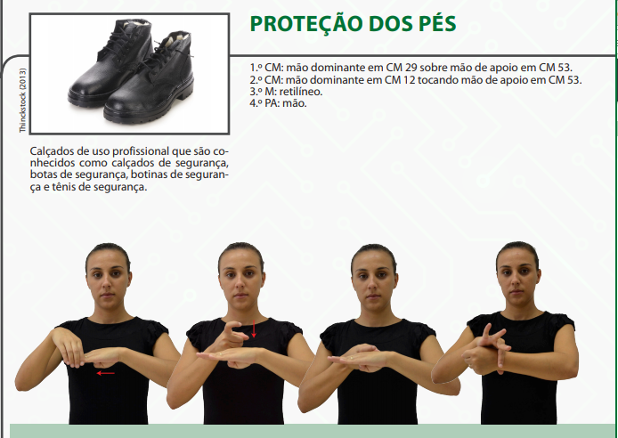Capacete:

Cinto de Segurança:
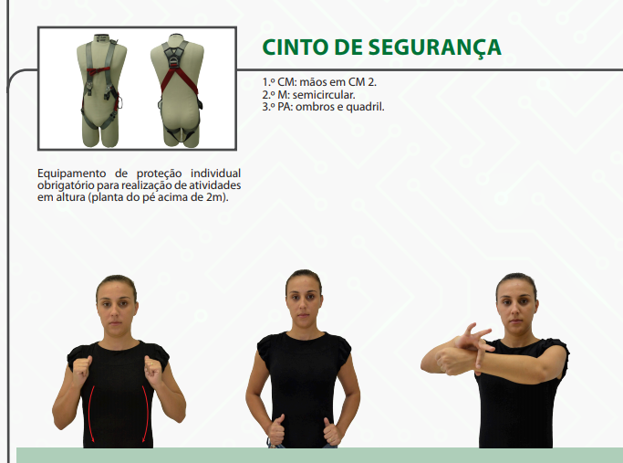EPI:
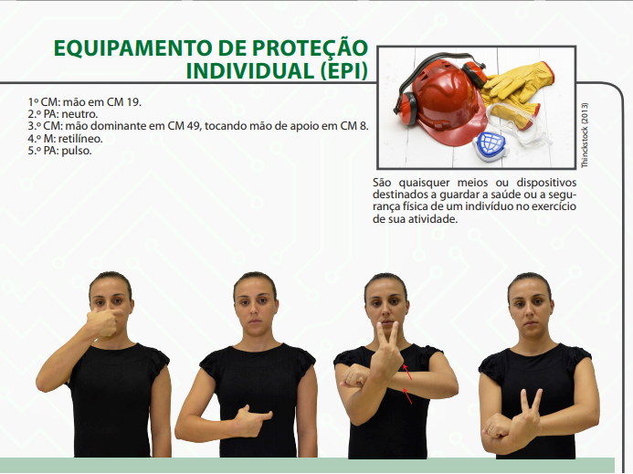Luva de Borracha:
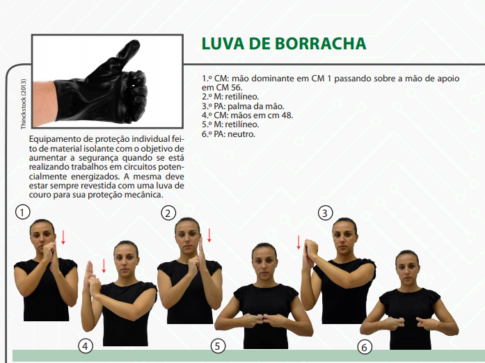Luva de Couro:
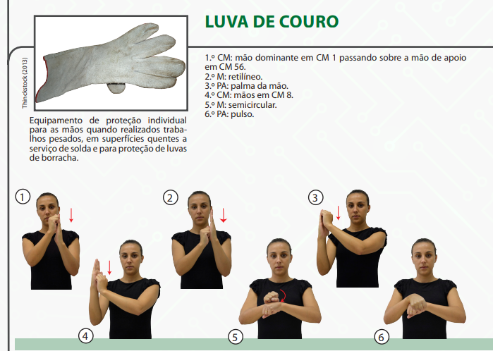Máscara de Proteção::
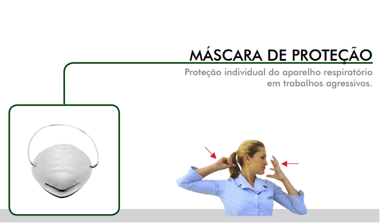Máscara de Solda:
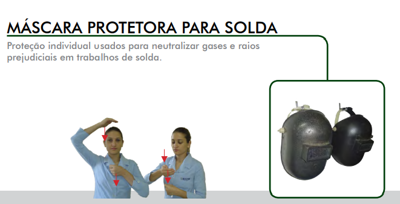Óculos de Proteção:
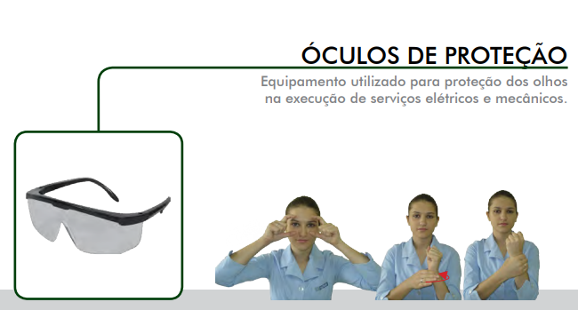Óculos de Segurança:
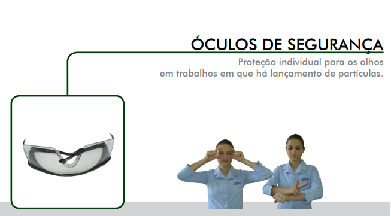Protetor Auricular:
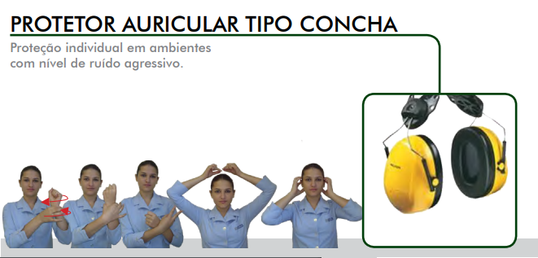Protetor Auricular Plug:
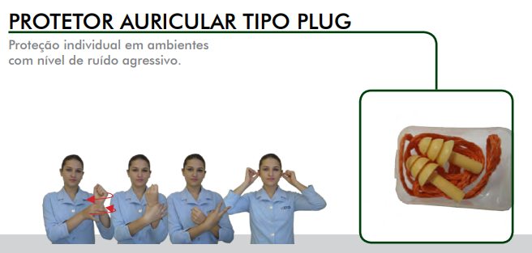Protetor Facial
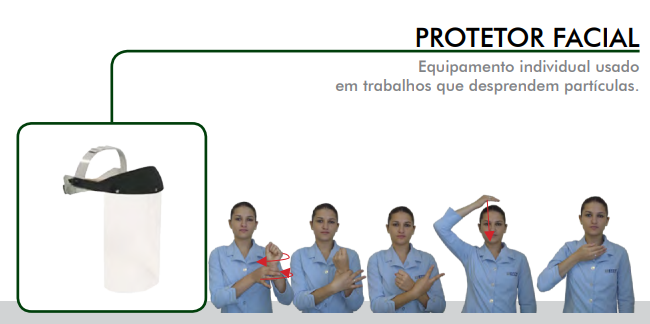